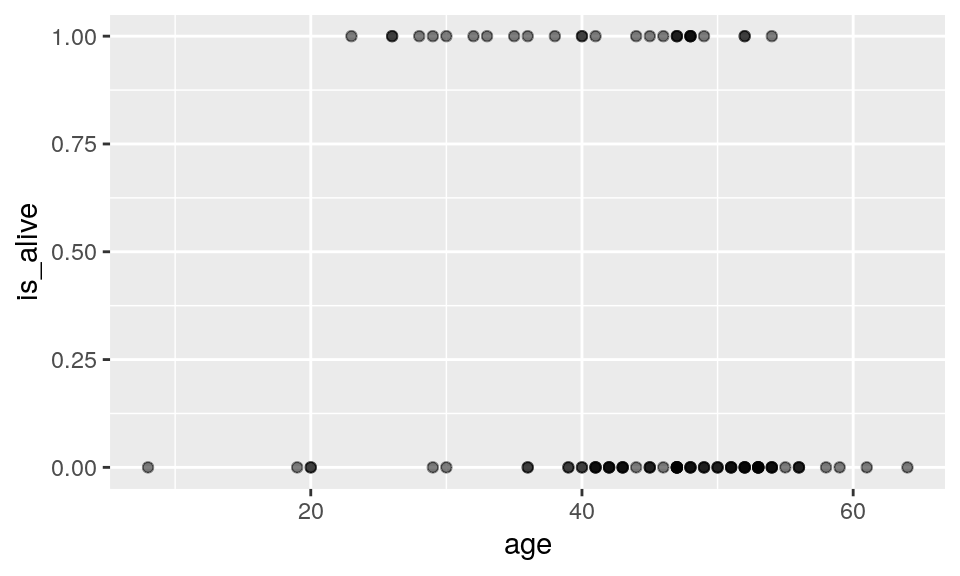
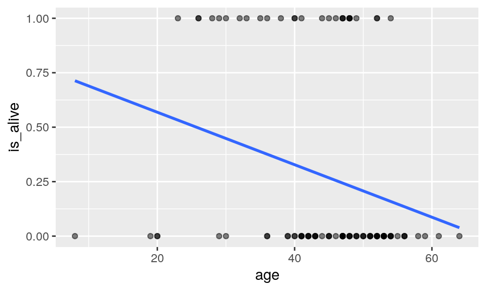
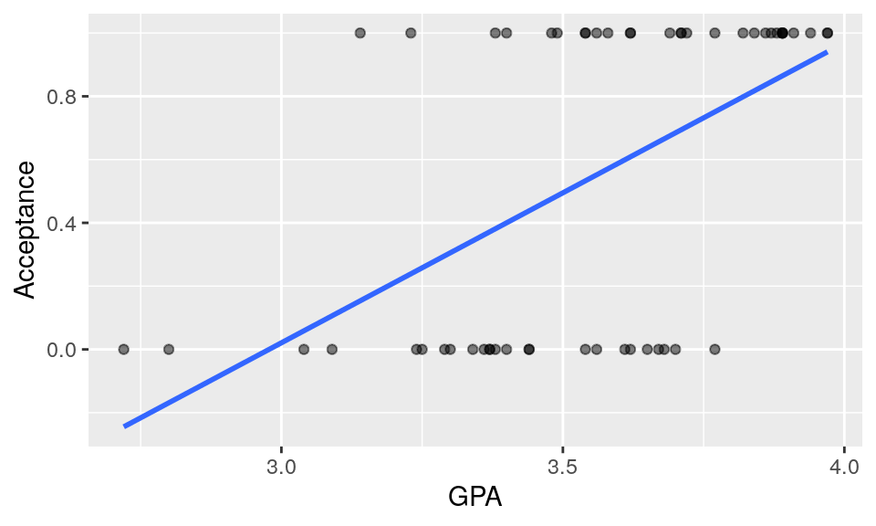
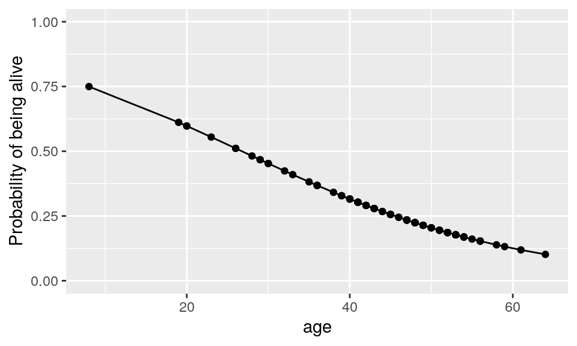
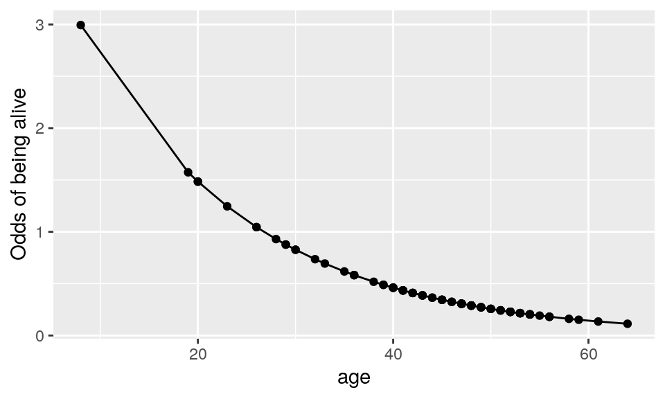
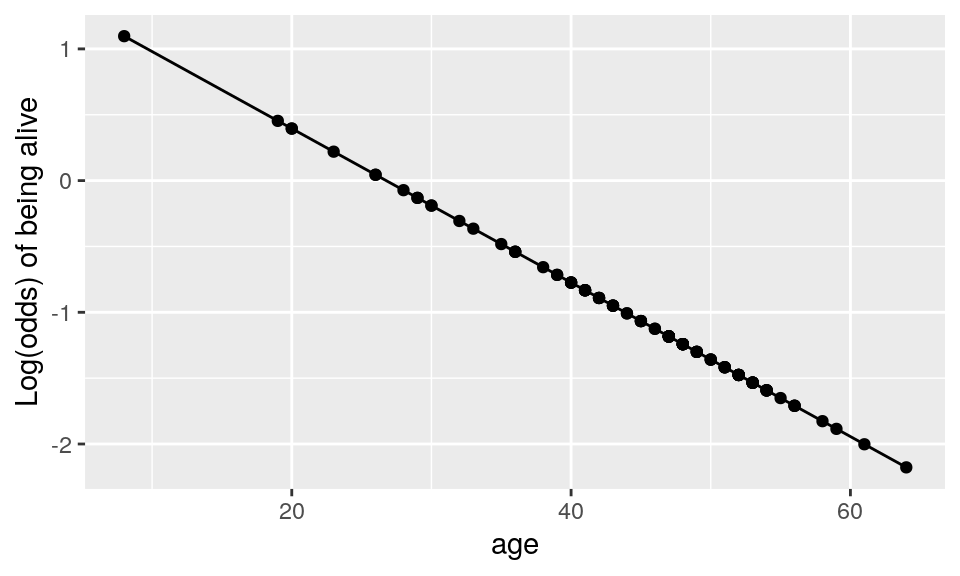

Overview
The dataset
In this lesson you’ll learn about using logistic regression, a generalized linear model (GLM), to predict a binary outcome and classify observations.
We’ll fit a linear regression model to data about 55 students who applied to medical school. We want to understand how their undergraduate \(GPA\) relates to the probability they will be accepted by a particular school \((Acceptance)\).
The medical school acceptance data is loaded as MedGPA.
data(MedGPA)
MedGPAAbout the dataset:
?MedGPACreate a Scatterplot
Create a Scatterplot called data_space for Acceptance as a function of GPA. Use geom_smooth() to add the simple linear regression line to data_space.
data_space <-ggplot(data = ____ , aes(x = _____ , y = _____)) +
geom_point()data_space <-ggplot(data = MedGPA, aes(x = GPA, y = Acceptance)) +
geom_point()We can add a linear regression line to the plot using the following code.
# create scatterplot
data_space <-ggplot(data = MedGPA, aes(x = GPA, y = Acceptance)) +
geom_point()
#add linear regression line
data_space +
geom_smooth(method = "lm", se=FALSE)Remark: In geom_smooth() define the method and se arguments for a straight line fit without the standard error band.
Note that our regression line only illogical predictions (i.e. probability $ or probability $) for students with very high or very low GPAs. For GPAs closer to average, the predictions seem fine.
We can also create a scatterplot to to visualize the students with different GPA/VR scores (colored by the Acceptance field).
# create scatterplot
ggplot(data = MedGPA, aes(x = GPA, y = MCAT, color=factor(Acceptance))) +
geom_point()Fitting logistic regression
Specifying a logistic regression model is very similar to specify a regression model, with two important differences:
- We use the
glm()function instead oflm() - We specify the
familyargument and set it tobinomial. This tells the GLM function that we want to fit a logistic regression model to our binary response. The terminology stems from the assumption that our binary response follows a what is called a binomial distribution.
Use glm() to fit a logistic regression model for showing the Acceptance as a function of GPA for the MedGPA dataset.
glm(___, data = ___, family = ___)Hint: The only difference in syntax for lm() and glm() is that in glm() you also have to specify family = binomial.
glm(Acceptance ~ GPA, data = MedGPA, family = binomial)Using geom_smooth()
Our logistic regression model can be visualized in the data space by overlaying the appropriate logistic curve. We can use the geom_smooth() function to do this. Recall that geom_smooth() takes a method argument that allows you to specify what type of smoother you want to see. In our case, we need to specify that we want to use the glm() function to do the smoothing.
However we also need to tell the glm() function which member of the GLM family we want to use. To do this, we will pass the family argument to glm() as a list using the method.args argument to geom_smooth(). This mechanism is common in R, and allows one function to pass a list of arguments to another function.
- Create a scatterplot called
data_spaceforAcceptanceas a function ofGPA. Usegeom_jitter()to apply a small amount of jitter to the points in the \(y\)-direction. Setwidth = 0andheight = 0.05ingeom_jitter(). - Use
geom_smooth()to add the logistic regression line todata_spaceby specifying themethodandmethod.argsarguments to fit a logisticglm.
data_space <- ggplot(data = MedGPA, aes(x = GPA, y = Acceptance)) +
geom_point(width = 0, height = 0.05, alpha = 0.5)
data_space +
geom_smooth(method = "glm", se = FALSE, color = "red",
method.args = list(family = "binomial"))Notice how the logistic regression line is curved—most noticeably at the ends. The logistic regression line will never reach 0 or 1, eliminating those invalid predicted probabilities. In this case, for most ages, the simple linear regression line and the logistic regression line don’t differ by very much, and you might not lose much by using the simpler regression model. But for older people, the logistic model should perform much better.
Examining the model
To obtain the coeffients of the model, use the coef function.
mod <- glm(Acceptance ~ GPA, data = MedGPA, family = binomial)
(c<-coef(mod))## (Intercept) GPA
## -19.206503 5.454166In logistic regression, a link function is used to transform the scale of the response variable to match the output of a linear model.
\[logit(p) = \log{ \left( \frac{p}{1-p} \right) } = \beta_0 + \beta_1 \cdot x\]
- The link function used by logistic regression is called the logit function.
- This constrains the fitted values of the model to always lie between 0 and 1, as a valid probability must.
Our model is given by
\[ \log{ \left( \frac{p}{1-p} \right) } = \beta_0 + \beta_1 \cdot x\] The probability that the student getting acceptance is
\[ p = \frac{\exp{( \beta_0 + \beta_1 \cdot x )}}{1 + \exp( \beta_0 + \beta_1 \cdot x ) } \]
For instance, for age of 3.5
s <- -19.206503 + 5.454166*3.5
exp(s)/(1+exp(s))## [1] 0.4708028What is the probability that a student with GPA 3 is getting accepted?
s <- ____________
exp(s)/(1+exp(s))What is the probability that a student with GPA 4 is getting accepted?
s <- ______________
exp(s)/(1+exp(s))What is the probability that a student with GPA 2 is getting accepted?
s <- ______________
exp(s)/(1+exp(s))Visualizing the probability of acceptance when GPA changes
As we have seen, running the augment() function on the model object will return a data frame with—among other things—the fitted values. We should the type.predict argument to response to retrieve the fitted values on the familiar probability scale.
# fit model
mod_gpa <- glm(Acceptance ~ GPA, data = MedGPA, family = binomial)
# compute fitted probability
mod_gpa_plus <- mod_gpa %>%
augment(type.predict = "response") %>%
select(Acceptance, GPA, .fitted)
# show the data
mod_gpa_plusLet’s visualize by plotting a chart.
ggplot (mod_gpa_plus, aes(x = GPA, y = fitted)) +
geom_point() +
geom_line() +
scale_y_continuous("Probability of acceptance", limits = c(0, 1))To generate prediction based on the model, we can also build a data frame and run it through our model using the newdata argument to augment().
nd <- data.frame(GPA=3)
augment(mod, newdata = nd, type.predict = "response")nd <- data.frame(GPA=4)
augment(mod, newdata = nd, type.predict = "response")nd <- data.frame(GPA=2)
augment(mod, newdata = nd, type.predict = "response")Making binary predictions
If our response variable is binary, then why are we making probabilistic predictions? Shouldn’t we be able to make binary predictions? That is, instead of predicting the probability that a person survives for five years, shouldn’t we be able to predict definitively whether they will live or die?
There are a number of different ways in which we could reasonably convert our probabilistic fitted values into a binary decision. The simplest way would be to simply round the probabilities.
mod_plus <- augment(mod, type.predict = "response") %>%
mutate(rounded_fitted = round(.fitted))
mod_plus %>%
select( GPA, Acceptance, .fitted, rounded_fitted)Confusion matrix
So how well did our model perform? One common way of assessing performance of models for a categorical response is via a confusion matrix. This simply cross-tabulates the reality with what our model predicted.
mod_plus %>%
select(Acceptance, rounded_fitted) %>%
table()## rounded_fitted
## Acceptance 0 1
## 0 16 9
## 1 6 24One way to improve the accuracy of our binary predictions would be to experiment with different rounding thresholds.
Fitting a line to a binary response (1)
Thus far, we have only built models for a numeric response variable.
A categorical response variable
A well-known Stanford University study on heart transplants tracked the five-year survival rate of patients with dire heart ailments. The purpose of the study was to assess the efficacy of heart transplants, but for right now we will simply focus on modeling the survival rates of these patients. First, we view the dataset.
heart_transplantLet’s create a scatterplot to show the relationship bewteen age and survived attributes.
ggplot(data = heart_transplant, aes(x = age, y = survived)) +
geom_point(width = 0, height = 0.05, alpha = 0.5)This plot illustrates how those patients who were older when the study began were more likely to be dead when the study ended (five years later).
Making a binary variable
First, we have a technical problem, in that the levels of our response variable are labels, and you can’t build a regression model to a variable that consists of words! We can get around this by creating a new variable that is binary (either 0 or 1), based on whether the patient survived to the end of the study. We call this new variable is_alive.
heart_transplant <- heart_transplant %>%
mutate(is_alive = ifelse(survived == "alive", 1, 0))
heart_transplant Visualizing a binary response
We can then visualize our data_space. The vertical axis can now be thought of as the probability of being alive at the end of the study, given one’s age at the beginning.
data_space <- ggplot(data = heart_transplant, aes(x = age, y = is_alive)) +
geom_point(width = 0, height = 0.05, alpha = 0.5)
data_space
Regression with a binary response
Now, we fit a simple linear regression model to these data. But it’s not hard to see that the line doesn’t fit very well. There are other problems as well…
data_space +
geom_smooth(method = "lm", se = FALSE)
Limitations of regression
What would this model predict as the probability of a 70-year-old patient being alive?
- It would be a number less than zero, which doesn’t make sense as a probability.
- Because the regression line always extends to infinity in either direction, it will make predictions that are not between 0 and 1, sometimes even for reasonable values of the explanatory variable.
Exercise: Fitting a line to a binary response
When our response variable is binary, a regression model has several limitations. Among the more obvious - and logically incongruous - is that the regression line extends infinitely in either direction. This means that even though our response variable \(y\) only takes on the values 0 and 1, our fitted values \(\hat{y}\) can range anywhere from \(-\infty\) to \(\infty\). This doesn’t make sense.
To see this in action,
Fitting a line to a binary response (2)
Fitting a Generalized linear models (GLM)
A modeling framework exists that generalizes regression to include response variables that are non-normally distributed. This family is called generalized linear models or GLMs for short. One member of the family of GLMs is called logistic regression which models a binary response variable.
Fitting the simple linear regression
When we fit the simple linear regression line previously, we noted how the line was headed towards illogical predictions (when the GPA is very low or very high)
data_space <- ggplot(data = MedGPA, aes(x = GPA, y = Acceptance)) +
geom_point(width = 0, height = 0.05, alpha = 0.5)
data_space +
geom_smooth(method = "lm", se = FALSE)
Three scales approach to interpretation
Probability scale
For the Stanford heart transplant patients, we’ve observed how the probability of survival seems to decline with age. The notion of probability here is very intuitive: it’s easy to understand what we mean when we say that the five-year survival rate is 75%.
\[ \hat{y} = \frac{\exp{( \hat{\beta}_0 + \hat{\beta}_1 \cdot x )}}{1 + \exp( \hat{\beta}_0 + \hat{\beta}_1 \cdot x ) } \]
mod_heart <- glm(is_alive ~ age, data = heart_transplant, family = binomial)Here, we compute the fitted probabilities using the augment() function.
heart_transplant_plus <- mod_heart %>%
augment(type.predict = "response") %>%
mutate(y_hat = .fitted)Probability scale plot
Unfortunately, since our model is now non-linear, it’s harder to succinctly characterize how those probabilities decline.
ggplot(heart_transplant_plus, aes(x = age, y = y_hat)) +
geom_point() +
geom_line() +
scale_y_continuous("Probability of being alive", limits = c(0, 1))
We can no longer say that “each additional year of age is associated with a particular change in the probability of surviving,” because that change in probability is not constant across ages. Thus, while the probability scale is natural, it can be cumbersome to work with.
Odds scale
To combat the problem of the scale of the y variable, we can change the scale of the variable on the y-axis. Instead of thinking about the probability of survival, we can think about the odds. While these two concepts are often conflated, they are not the same. They are however, related by the simple formula below. The odds of a binary event are the ratio of how often it happens, to how often it doesn’t happen.
\[ odds(\hat{y}) = \frac{\hat{y}}{1-\hat{y}} = \exp{( \hat{\beta}_0 + \hat{\beta}_1 \cdot x ) } \]
Thus, if the probability of survival is 75%, then the odds of survival are 3:1, since you are three times more likely to survive than you are to die. Odds are commonly used to express uncertainty in a variety of contexts, most notably gambling.
heart_transplant_plus <- heart_transplant_plus %>%
mutate(odds_hat = y_hat / (1 - y_hat))Odds scale plot
ggplot(heart_transplant_plus, aes(x = age, y = odds_hat)) +
geom_point() +
geom_line() +
scale_y_continuous("Odds of being alive")
If we change the y-scale to odds, then our model must change shape as well. In fact, our model now has the form of an exponential function. In this case, the odds of survival decrease exponentially as people age.
Log-odds scale
\[ logit(\hat{y}) = \log{ \left[ \frac{\hat{y}}{1-\hat{y}} \right] } = \hat{\beta}_0 + \hat{\beta}_1 \cdot x \]
heart_transplant_plus <- heart_transplant_plus %>%
mutate(log_odds_hat = log(odds_hat))While the odds scale is more useful than the probability scale for certain things, it isn’t entirely satisfying. Statisticians also think about logistic regression models on the log-odds scale, which is formed by taking the natural log of the odds.
Log-odds plot
ggplot(heart_transplant_plus, aes(x = age, y = log_odds_hat)) +
geom_point() +
geom_line() +
scale_y_continuous("Log(odds) of being alive")
The benefit to this approach is clear: now the logistic regression model can be visualized as a line!
Unfortunately, understanding what the log of the odds of an event means is very difficult for humans.
Comparison
- Probability scale
- scale: intuitive, easy to interpret
- function: non-linear, hard to interpret
- Odds scale
- scale: harder to interpret
- function: exponential, harder to interpret
- Log-odds scale
- scale: impossible to interpret
- function: linear, easy to interpret
So we’ve identified three different scales when working with logistic regression models. Each has its own strengths but also weaknesses, and so you really can’t stick with one scale and ignore the others.
The probability scale is the easiest to understand, but it makes the logistic function difficult to interpret. Conversely the logistic function becomes a line on the log-odds scale. This makes the function easy to interpret, but the log of the odds is hard to grapple with. The odds scale lies somewhere in between.
Odds ratios
\[ OR = \frac{ odds(\hat{y} | x + 1 )}{odds(\hat{y} | x )} = \frac{ \exp{( \hat{\beta}_0 + \hat{\beta}_1 \cdot (x + 1) ) }}{\exp{( \hat{\beta}_0 + \hat{\beta}_1 \cdot x ) }} = \exp{\beta_1} \]
exp(coef(mod_heart))## (Intercept) age
## 4.7797050 0.9432099Moreover, it is the odds scale that leads to the most common interpretation of the coefficients in a logistic regression model. As noted previously, interpreting the coefficients on the probability scale is hard because the model is non-linear, while interpreting them on the log-odds scale is hard because the scale is abstruse. However, on the odds scale we can form the ratio of the odds when the explanatory variable increases by one unit. This works out mathematically to be equal to the exponential of \(\beta_1\), or \(e^{\beta_{1}}\), the “slope” coefficient.
Our interest is in how this number differs from 1. If it’s greater than one, then the odds increase. Conversely, if it’s less than one, then the odds decrease. In our case, our model suggests that each additional year of age is associated with a 6% decrease in the odds of survival.
Keeping careful track of which scale you are working on will help you get these interpretations right.
Odds scale
For most people, the idea that we could estimate the probability of being admitted to medical school based on undergraduate GPA is fairly intuitive. However, thinking about how the probability changes as a function of GPA is complicated by the non-linear logistic curve. By translating the response from the probability scale to the odds scale, we make the right hand side of our equation easier to understand.
If the probability of getting accepted is \(y\), then the odds are \(y / (1-y)\). Expressions of probabilities in terms of odds are common in many situations, perhaps most notably gambling.
Here we are plotting \(y/(1-y)\) as a function of \(x\), where that function is
\[ odds(\hat{y}) = \frac{\hat{y}}{1-\hat{y}} = \exp{( \hat{\beta}_0 + \hat{\beta}_1 \cdot x ) } \]
Note that the left hand side is the expected odds of being accepted to medical school. The right hand side is now a familiar exponential function of \(x\).
Already loaded for you are two data frames: the MedGPA_binned data frame contains the data for each GPA bin, while the MedGPA_plus data frame records the original observations after being augment()-ed by mod.
- Add a variable called
oddstoMedGPA_binnedthat records the odds of being accepted to medical school for each bin. - Create a scatterplot called
data_spaceforoddsas a function ofmean_GPAusing the binned data inMedGPA_binned. Connect the points withgeom_line(). - Add a variable called
odds_hattoMedGPA_plusthat records the predicted odds of being accepted for each observation. - Use
geom_line()to illustrate the model through the fitted values. Note that you should be plotting the \(\widehat{odds}\)’s.
# compute odds for bins
MedGPA_binned <- ___
# plot binned odds
data_space <- ___
# compute odds for observations
MedGPA_plus <- ___
# logistic model on odds scale
data_space +
geom_line(___, color = "red")MedGPA_binned <- MedGPA_binned %>%
mutate(odds = acceptance_rate / (1 - acceptance_rate))data_space <- ggplot(data = MedGPA_binned, aes(x = mean_GPA, y = odds)) +
geom_point() +
geom_line()MedGPA_plus <- MedGPA_plus %>%
mutate(odds_hat = .fitted / (1 - .fitted))# compute odds for bins
MedGPA_binned <- MedGPA_binned %>%
mutate(odds = acceptance_rate / (1 - acceptance_rate))
# plot binned odds
data_space <- ggplot(data = MedGPA_binned, aes(x = mean_GPA, y = odds)) +
geom_point() +
geom_line()
# compute odds for observations
MedGPA_plus <- MedGPA_plus %>%
mutate(odds_hat = .fitted / (1 - .fitted))
# logistic model on odds scale
data_space +
geom_line(data = MedGPA_plus, aes(x = GPA, y = odds_hat), color = "red")Log-odds scale
Previously, we considered two formulations of logistic regression models:
- on the probability scale, the units are easy to interpret, but the function is non-linear, which makes it hard to understand
- on the odds scale, the units are harder (but not impossible) to interpret, and the function in exponential, which makes it harder (but not impossible) to interpret
We’ll now add a third formulation:
- on the log-odds scale, the units are nearly impossible to interpret, but the function is linear, which makes it easy to understand
As you can see, none of these three is uniformly superior. Most people tend to interpret the fitted values on the probability scale and the function on the log-odds scale. The interpretation of the coefficients is most commonly done on the odds scale. Recall that we interpreted our slope coefficient \(\beta_1\) in linear regression as the expected change in \(y\) given a one unit change in \(x\). On the probability scale, the function is non-linear and so this approach won’t work. On the log-odds scale, the function is linear, but the units are not interpretable (it is difficult to answer the question: what does the \(\log\) of the odds mean??). However, on the odds scale, a one unit change in \(x\) leads to the odds being multiplied by a factor of \(\beta_1\). To see why, we form the odds ratio:
\[ OR = \frac{odds(\hat{y} | x + 1 )}{ odds(\hat{y} | x )} = \exp{\beta_1} \]
Thus, the exponentiated coefficient \(\beta_1\) tells us how the expected odds change for a one unit increase in the explanatory variable. It is tempting to interpret this as a change in the expected probability, but this is wrong and can lead to nonsensical predictions (e.g. expected probabilities greater than 1).
- Add a variable called
log_oddstoMedGPA_binnedthat records the odds of being accepted for each bin. Recall that \(odds(p) = p / (1-p)\).
- Create a scatterplot called
data_spaceforlog_oddsas a function ofmean_GPAusing the binned data inMedGPA_binned. Usegeom_lineto connect the points. - Add a variable called
log_odds_hattoMedGPA_plusthat records the predicted odds of being accepted for each observation. - Use
geom_line()to illustrate the model through the fitted values. Note that you should be plotting the \(\log{\widehat{odds}}\)’s.
# compute log odds for bins
MedGPA_binned <- ___
# plot binned log odds
data_space <- ___
# compute log odds for observations
MedGPA_plus <- ___
# logistic model on log odds scale
data_space +
geom_line(___, color = "red")MedGPA_binned <- MedGPA_binned %>%
mutate(log_odds = log(acceptance_rate / (1 - acceptance_rate)))data_space <- ggplot(data = MedGPA_binned, aes(x = mean_GPA, y = log_odds)) +
geom_point() +
geom_line()MedGPA_plus <- MedGPA_plus %>%
mutate(log_odds_hat = log(.fitted / (1 - .fitted)))# compute log odds for bins
MedGPA_binned <- MedGPA_binned %>%
mutate(log_odds = log(acceptance_rate / (1 - acceptance_rate)))
# plot binned log odds
data_space <- ggplot(data = MedGPA_binned, aes(x = mean_GPA, y = log_odds)) +
geom_point() +
geom_line()
# compute log odds for observations
MedGPA_plus <- MedGPA_plus %>%
mutate(log_odds_hat = log(.fitted / (1 - .fitted)))
# logistic model on log odds scale
data_space +
geom_line(data = MedGPA_plus, aes(x = GPA, y = log_odds_hat), color = "red")Interpretation of logistic regression
The fitted coefficient \(\hat{\beta}_1\) from the medical school logistic regression model is 5.45. The exponential of this is 233.73.
Donald’s GPA is 2.9, and thus the model predicts that the probability of him getting into medical school is 3.26%. The odds of Donald getting into medical school are 0.0337, or - phrased in gambling terms - 29.6:1.
Food for thought: If Donald hacks the school’s registrar and changes his GPA to 3.9, how would his expected odds of getting into medical school change?
Using a logistic model
Learning from a model
heart_transplant <- heart_transplant %>%
mutate(is_alive = ifelse(survived == "alive", 1, 0))
mod <- glm(is_alive ~ age + transplant,
data = heart_transplant, family = binomial)
mod##
## Call: glm(formula = is_alive ~ age + transplant, family = binomial,
## data = heart_transplant)
##
## Coefficients:
## (Intercept) age transplanttreatment
## 0.97311 -0.07632 1.82316
##
## Degrees of Freedom: 102 Total (i.e. Null); 100 Residual
## Null Deviance: 120.5
## Residual Deviance: 103.9 AIC: 109.9coef(mod)## (Intercept) age transplanttreatment
## 0.97311242 -0.07632467 1.82316137exp(coef(mod))## (Intercept) age transplanttreatment
## 2.6461676 0.9265153 6.1914009One important reason to build a model is to learn from the coefficients about the underlying random process. For example, in the Stanford heart transplant study, we were able to estimate the effect of age on the five-year survival rate. This simple model shed no light on the obvious purpose of the study, which was to determine whether those patients who received heart transplants were likely to live longer than the control group that received no transplant.
By including the transplant variable in our model and exponentiating the coefficients, we see a huge effect. Patients who received a heart transplant saw their odds of survival improve by a factor of 6.2, even after controlling for age. Note that as expected, age still has a deleterious effect on mortality.
Using augment()
# log-odds scale
augment(mod)As we have seen, running the augment() function on the model object will return a data frame with—among other things—the fitted values. However, when we run this with the default options, the fitted values sure don’t look like probabilities! These are the fitted values on the log-odds scale, which aren’t terribly useful to us.
Making probabilistic predictions
# probability scale
augment(mod, type.predict = "response")However, if we set the type.predict argument to “response”, we retrieve the fitted values on the familiar probability scale.
Making predictions about the probability of survival for those patients who took part in the study is of somewhat limited value. We already know whether they survived! Aside from learning about the efficacy of the treatment, another common purpose for modeling is to make predictions for observations that are not part of our data set. These are called out-of-sample predictions.
Dick Cheney

For example, former Vice President Dick Cheney famously received a heart transplant in March of 2012 at the age of 71. More than five years later, Cheney is still alive, but what does our model predict for his five-year survival rate?
Out-of-sample predictions
cheney <- data.frame(age = 71, transplant = "treatment")
augment(mod, newdata = cheney, type.predict = "response")To compute this, we build a data frame with Cheney’s data, and run it through our model using the newdata argument to augment(). The results suggest that Cheney had only a 6.8% chance of survival. Either Cheney is quite lucky to be alive, or—more likely—the survival rates of all heart transplant patients have improved considerably since the Stanford study was completed in 1973.
Making binary predictions
mod_plus <- augment(mod, type.predict = "response") %>%
mutate(alive_hat = round(.fitted))
mod_plus %>%
select(is_alive, age, transplant, .fitted, alive_hat)If our response variable is binary, then why are we making probabilistic predictions? Shouldn’t we be able to make binary predictions? That is, instead of predicting the probability that a person survives for five years, shouldn’t we be able to predict definitively whether they will live or die?
There are a number of different ways in which we could reasonably convert our probabilistic fitted values into a binary decision. The simplest way would be to simply round the probabilities.
Confusion matrix
mod_plus %>%
select(is_alive, alive_hat) %>%
table()## alive_hat
## is_alive 0 1
## 0 71 4
## 1 20 8So how well did our model perform? One common way of assessing performance of models for a categorical response is via a confusion matrix. This simply cross-tabulates the reality with what our model predicted. In this case, our model predicted that 91 patients would die, and only 12 would live. Of those 91, 71 actually did die, while of the 12, 8 actually lived. Thus, our overall accuracy was 79 out of 103, or about 77%.
Note that our model predicted only 12 patients would live, but more than twice as many patients actually survived. Our model’s under-prediction is probably a consequence of the low survival rate overall, coupled with our clumsy rounding scheme. One way to improve the accuracy of our binary predictions would be to experiment with looser rounding thresholds.
Making probabilistic predictions
Just as we did with linear regression, we can use our logistic regression model to make predictions about new observations. In this exercise, we will use the newdata argument to the augment() function from the broom package to make predictions about students who were not in our original data set. These predictions are sometimes called out-of-sample.
Following our previous discussion about scales, with logistic regression it is important that we specify on which scale we want the predicted values. Although the default is terms – which uses the log-odds scale – we want our predictions on the probability scale, which is the scale of the response variable. The type.predict argument to augment() controls this behaviour.
A logistic regression model object, mod, has been defined for you.
- Create a new data frame which has one variable called
GPAand one row, with the value 3.51. - Use
augment()to find the expected probability of admission to medical school for a student with a GPA of 3.51.
# create new data frame
new_data <- ___
# make predictionsnew_data <- data.frame(GPA = 3.51)# create new data frame
new_data <- data.frame(GPA = 3.51)
# make predictions
augment(mod, newdata = new_data, type.predict = "response")Making binary predictions
Naturally, we want to know how well our model works. Did it predict acceptance for the students who were actually accepted to medical school? Did it predict rejections for the student who were not admitted? These types of predictions are called in-sample. One common way to evaluate models with a binary response is with a confusion matrix. [Yes, that is actually what it is called!]
However, note that while our response variable is binary, our fitted values are probabilities. Thus, we have to round them somehow into binary predictions. While the probabilities convey more information, we might ultimately have to make a decision, and so this rounding is common in practice. There are many different ways to round, but for simplicity we will predict admission if the fitted probability is greater than 0.5, and rejection otherwise.
First, we’ll use augment() to make the predictions, and then mutate() and round() to convert these probabilities into binary decisions. Then we will form the confusion matrix using the table() function. table() will compute a 2-way table when given a data frame with two categorical variables, so we will first use select() to grab only those variables.
You will find that this model made only 15 mistakes on these 55 observations, so it is nearly 73% accurate.
The model object mod is already loaded for you.
- Create a data frame with the actual observations, and their fitted probabilities, and add a new column,
Acceptance_hat, with the binary decision by rounding the fitted probabilities. - Compute the confusion matrix between the actual and predicted acceptance.
# data frame with binary predictions
tidy_mod <- ___
# confusion matrix
tidy_mod %>%
select(___, ___) %>%
___()tidy_mod <- augment(mod, type.predict = "response") %>%
mutate(Acceptance_hat = round(.fitted)) tidy_mod %>%
select(Acceptance, Acceptance_hat) %>%
___# data frame with binary predictions
tidy_mod <- augment(mod, type.predict = "response") %>%
mutate(Acceptance_hat = round(.fitted))
# confusion matrix
tidy_mod %>%
select(Acceptance, Acceptance_hat) %>%
table()Congratulations!
You have successfully completed Lesson 4 in Tutorial 4: Multiple and Logistic Regression.